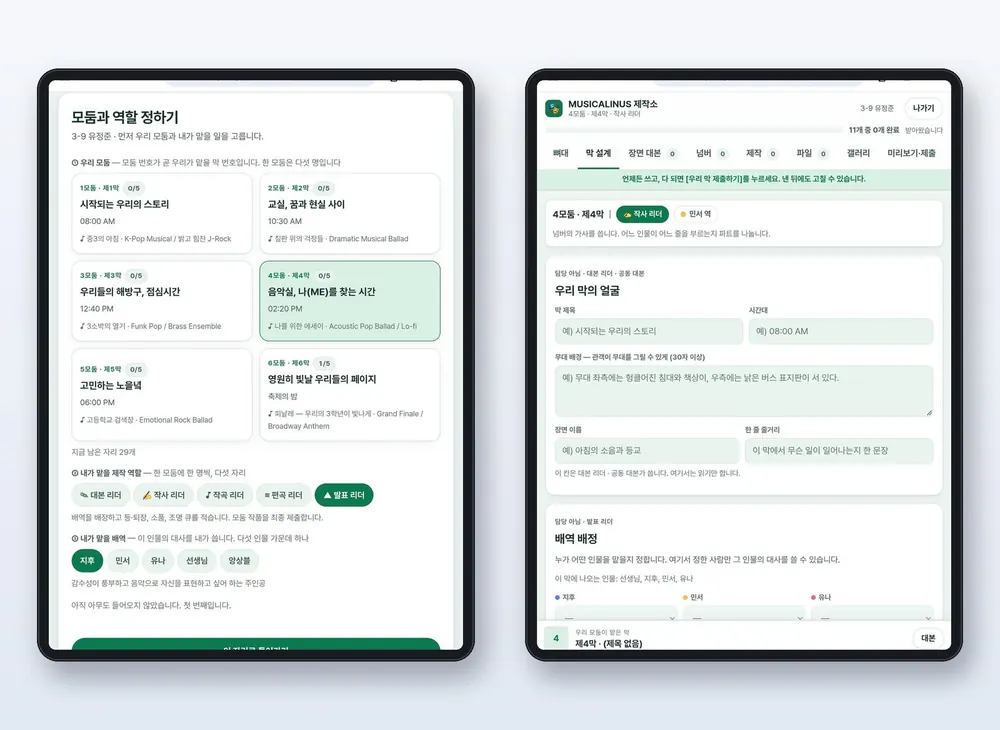
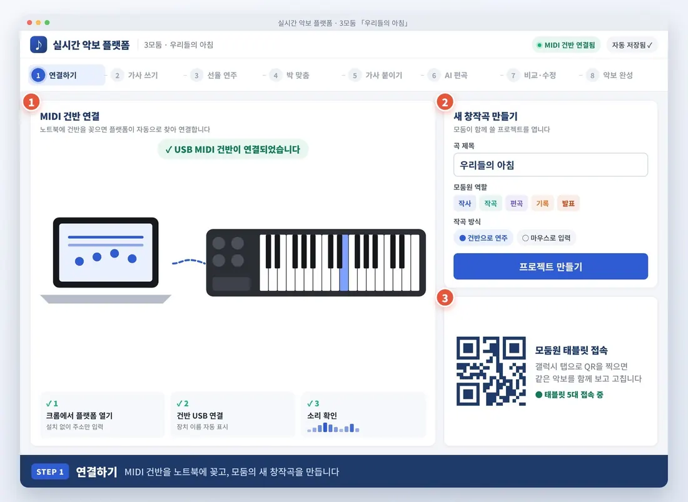
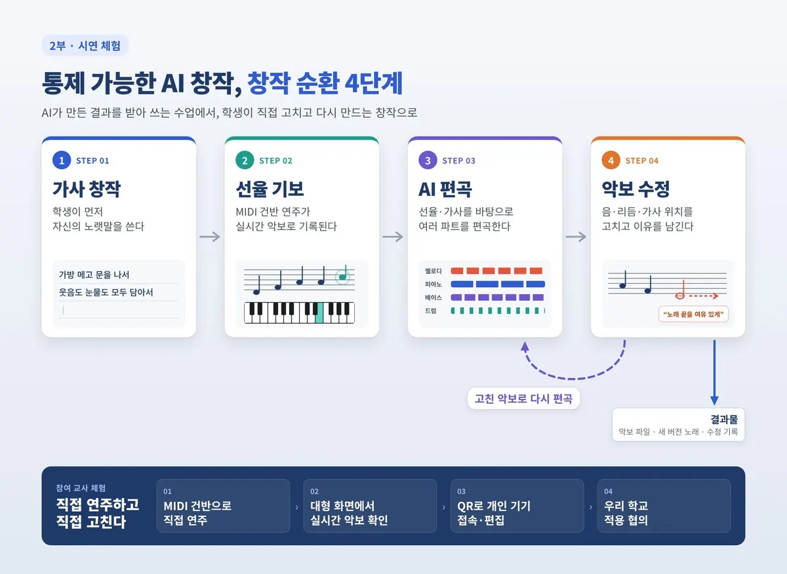
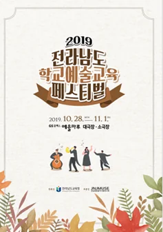
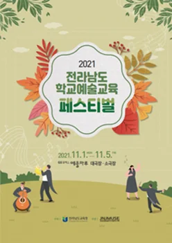
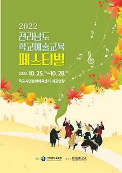
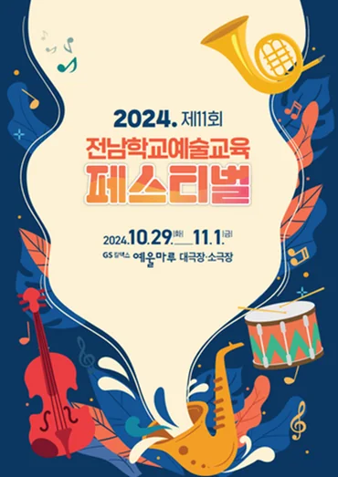
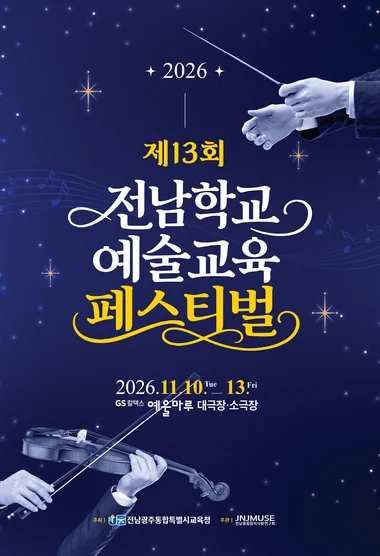
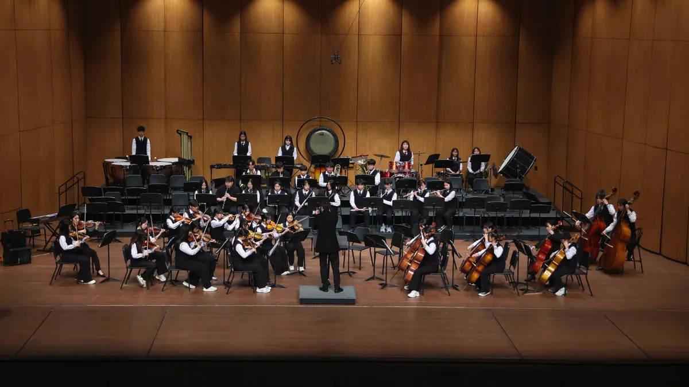

Problem
학생이 손댈 자리가 없다
AI 음악 생성 도구는 노랫말 몇 줄로 완성된 노래를 돌려준다. 그러나 선율의 어느 음을, 가사의 어느 자리를, 반주의 어느 악기를 바꾸고 싶어도 학생이 직접 손댈 수 있는 곳은 거의 없다. 마음에 들지 않으면 다시 생성하는 것이 전부다. 결과물은 남지만, 음악을 짓는 과정은 학생의 것이 되지 못한다.
Cover · 2026 수업나눔페스타
교사가 짓는 음악 수업 플랫폼 — 뮤지컬리너스에서 실시간 악보까지

Editor's Letter / 발간사
무대에 오르는 음악이 있다면, 그 음악이 자라는 교실이 있습니다. 열세 번째 전남학교예술교육페스티벌을 주관한 전남중등음악사랑연구회가 이번에는 한 음악 교사의 교실을 엽니다. 교사는 플랫폼을 짓고, 학생은 노래를 짓습니다. 그 두 번의 '짓다'를 이 호에 담았습니다.
전남중등음악사랑연구회는 전남의 중등 음악 교사들이 수업을 함께 연구하는 모임입니다. 올해는 열세 번째 전남학교예술교육페스티벌을 주관했고, 48개 팀, 1,827명의 학생이 여수 예울마루 무대에 섰습니다.
무대에 오르는 음악이 있다면, 그 음악이 자라는 교실이 있습니다. 이번 수업나눔페스타에서 우리 연구회는 한 음악 교사의 교실을 열어 보입니다. 교사는 수업에 꼭 맞는 도구가 없을 때 플랫폼을 직접 지었고, 학생들은 그 위에서 노랫말을 쓰고, 선율을 연주하고, AI가 내놓은 편곡을 스스로 고쳐 자기 노래를 지었습니다. 행사 주제 「2030교실에서 짓다」의 '짓다'가 이 교실에서는 두 번 일어난 셈입니다.
이 책에 담은 플랫폼들은 따로 가입하거나 설치하지 않고 바로 열립니다. 오늘 이 글을 읽는 선생님의 교실에서 내일 바로 시작할 수 있기를 바랍니다. 수업을 기꺼이 나누어 준 선생님과, 이 기록의 주인공인 학생들에게 감사드립니다.
2026. 12. 5.
전남중등음악사랑연구회 회장 김세라
AI에게 노랫말 몇 줄을 건네면 완성된 노래가 돌아옵니다. 그런데 그 노래의 어디를 학생이 고칠 수 있을까요? 순천승평중학교 음악실에서 시작된 이 질문이 교사가 직접 지은 네 개의 수업 플랫폼이 되었고, 지금 다섯 번째 플랫폼을 짓고 있습니다.

Problem
AI 음악 생성 도구는 노랫말 몇 줄로 완성된 노래를 돌려준다. 그러나 선율의 어느 음을, 가사의 어느 자리를, 반주의 어느 악기를 바꾸고 싶어도 학생이 직접 손댈 수 있는 곳은 거의 없다. 마음에 들지 않으면 다시 생성하는 것이 전부다. 결과물은 남지만, 음악을 짓는 과정은 학생의 것이 되지 못한다.
Solution
그래서 교사는 수업에 필요한 도구를 직접 설계하고 만들었다. 출발점은 언제나 수업의 흐름이었다. 이번에 선보이는 실시간 악보 플랫폼은 학생이 건반으로 연주한 선율이 그 자리에서 악보가 되고, AI가 붙인 편곡을 파트별 음표로 받아 학생이 비교하고 고치도록 설계했다.
Spread
플랫폼은 교육청 학생 계정으로 로그인하거나 로그인 없이 주소만으로 열린다. 따로 가입하거나 설치할 필요가 없다. 학생은 학교 태블릿으로 QR을 찍어 바로 참여하고, 다른 학교 교사도 주소만 열면 같은 수업을 시작할 수 있다.
Before
After
교사는 플랫폼을 짓고,
통제 가능한 AI 창작 — 2030교실에서 '짓다'는 두 번 일어난다
학생은 노래를 짓는다.
함께 보는 자료
플랫폼을 실제 수업에 적용한 장면입니다.
화면을 누르면 바로 재생됩니다 · 재생이 안 되면 YouTube에서 보기
수행평가 시기가 오면 활동지와 사이트와 발표 자료가 책상 위에 쌓이지요. 네 플랫폼은 수업 활동이 곧 기록이 되도록 한 화면에 모았습니다. 카드를 눌러 바로 열어 보세요.

뮤지컬리너스 · 학생 화면 · 2026
모둠원이 각자 맡은 역할 칸을 채우면 하나의 장면 대본으로 합쳐지고, 여섯 모둠의 장면이 이어져 학급의 6막 뮤지컬이 된다. 칸마다 활동지 예시안이 미리 보인다.
이 수업에 쓰세요 · 모둠 협업 창작 · 학급 뮤지컬 · 자유학기
바로가기 ↗
음악 산업 탐구 · 12개 분야 선택 · 교사용 수업 통제 · 2026
음악 산업의 12개 분야 가운데 하나를 골라 조사하고 발표하며, 친구의 발표를 동료평가한다. 교사는 교사용 화면에서 수업 진행을 통제한다.
이 수업에 쓰세요 · 중3 생활화 영역 수행평가 · 진로 연계
바로가기 ↗서양음악사 비교 감상 · 첫 화면 · 감상 활동지 · 2026
김소월의 「진달래꽃」 한 편을 서양음악사의 스무 가지 양식으로 편곡한 음악을 차례로 듣고 비교한다. 양식의 특징을 감상 활동지에 적는다.
이 수업에 쓰세요 · 서양음악사 단원 · 감상 수행평가
바로가기 ↗
리릭 비디오 플레이어 · 학생 창작곡 장면 · 2026
학생이 지은 노랫말을 초 단위로 음원에 맞추고 가사 장면마다 이미지를 붙여 재생한다. 설치·로그인 없이 열려 복도와 급식실에 QR로 걸어 둘 수 있다.
이 수업에 쓰세요 · 창작 단원 결과 발표 · 캠페인송
바로가기 ↗Structure · 뮤지컬리너스
학급 공통 뼈대로는 6막 6넘버의 예시 대본 『찬란하게 빛나는 우리들의 중3 에세이』를 쓴다. 수행평가가 아니어서 입장과 제출을 늘 열어 두었고, 교사는 '학급·공지' 화면에 공지만 올리면 된다.
모둠 하나 · 모둠원 5명각자 한 칸
↓ 자동으로 합치기
↓ 여섯 모둠이 막 순서대로 잇기
↓
Start · 이렇게 시작해 보세요
건반을 누르면 그 음이 바로 악보에 적힌다면? AI가 붙인 편곡을 학생이 한 음씩 비교하고 고칠 수 있다면? 2부 시연 「AI 창작의 주도권을 학생에게」를 여덟 화면으로 따라가 봅니다. 아래 화면은 개발 중인 시안입니다.

건반을 꽂으면, 교실이 한 악보에 모인다.
MIDI 건반을 USB로 꽂으면 자동으로 연결된다. 곡 제목과 모둠원 역할(작사·작곡·편곡·기록·발표)을 정하고, 모둠원은 태블릿으로 QR을 찍어 같은 악보에 들어온다.
네 줄 노랫말이 여덟 마디의 뼈대가 된다.
노랫말을 한 줄씩 입력하면 글자가 음절로 나뉜다. 글자 하나가 음표 하나, 한 줄이 두 마디가 된다.
누르는 순간 기록된다.
4/4, ♩=92, 다장조처럼 연주 조건을 정한다. 예비박 네 번 뒤에 연주하면 누른 음의 높이와 길이가 막대로 그려지고, 음 이름이 바로 보인다.
흔들린 박이 음표로 자리 잡는다.
손으로 친 연주는 박보다 조금씩 빠르거나 늦다. 맞춤 단위를 고르고 '박 맞춤'을 누르면 막대가 박에 맞게 정리되고 음표가 된다.
글자가 음표 아래에 앉는다.
2단계에서 나눈 음절이 음표 아래에 한 글자씩 붙는다. 어긋난 글자는 끌어서 옮기고, 줄마다 글자 수와 음표 수가 맞는지 바로 확인한다.
반주는 AI가 붙이고, 선율은 학생이 지킨다.
장르·분위기·밴드 악기를 고른다. 학생의 선율과 가사는 그대로 두고, AI가 만든 편곡 세 가지 가운데 하나를 골라 파트별 음표로 받아온다.
AI가 바꾼 음은 주황색. 고를지 말지는 학생이 정한다.
내 선율과 AI의 노래 파트를 겹쳐 본다. 두 리듬을 들어 보고 모둠이 고르며, 고친 이유를 한 줄로 남기면 과정중심평가 기록이 된다.
밴드 총보 한 장. 그리고 다시 처음부터.
노래와 밴드 파트가 함께 적힌 총보가 된다. 악보 파일(MusicXML)·PDF·MIDI로 내보내고, 고친 악보로 AI 새 버전을 만들어 처음 버전과 비교한다.
마지막 결정은 학생이 한다.
STEP 07 비교·수정

Start · 이렇게 시작해 보세요
여덟 단계를 거쳐 완성한 9단 밴드 총보입니다. 악보를 누르면 크게 볼 수 있고, 아래 파트 이름을 누르면 그 파트가 맡은 일이 보입니다.
Lyrics
가방 메고 문을 나서
웃음도 눈물도 모두 담아서
내 꿈은 조금 더 가까워져
조금씩 더 커져 가는 나
Chords · 반 마디 단위
F G │ Em AmC G/B │ Am Em │ F C/E │ Dm7 GF G │ Em Am │ Dm7 G │ CParts · 파트를 눌러 보세요
노래 — 학생이 지은 선율과 가사. 음역은 레4~미5로, 중학생이 부르기 편한 범위다.
노래는 영상이 되고, 복도의 QR이 되고, 무대가 되었습니다. 학생이 지은 노래 다섯 곡을 모았습니다. 영상이 있는 작품은 누르면 그 자리에서 재생됩니다.
중0 · 모방시 창작 · 2026 · 리릭 비디오
01김영랑의 문장 틀에 학생의 말을 갈아 끼웠다
김영랑 「돌담에 속삭이는 햇발같이」의 문장 틀만 빌려 학생이 자기 말로 모방시를 지었다. 원시(1절)와 모방시(2절)가 한 화면에서 이어 재생되는 리릭 비디오로 완성했다.
중0 · 통일교육 계기교육 · 2026 · 창작곡 영상 2종
02영상을 보던 시간이 노래를 짓는 시간이 되었다
영상을 보고 끝나던 통일교육 계기교육 시간을 학생이 노랫말을 짓고 노래로 완성하는 창작 시간으로 바꾸었다. 수채화와 기차 두 가지 분위기의 영상으로 완성했다.

중0 · 급식문화 캠페인 · 2026 · 리릭 비디오
039일 만에 급식실 벽에 걸린 캠페인송
급식 질서를 주제로 묻고·찾고·빚고·나누는 과정을 거쳐 9일 만에 완성했다. 가사 줄마다 장면 이미지를 붙인 리릭 비디오를 QR로 급식실과 복도에 게시했다.
영상 주소 0
중0 · ME 프로젝트 · 2026 · 리릭 비디오
04나를 담은 노래
1학기 ME 프로젝트에서 학생이 쓴 가사로 AI 음원을 만들고, 가사 장면마다 이미지를 엮어 설치·로그인 없이 재생되는 리릭 비디오로 완성했다.
리릭 비디오 열기 ↗
중0 · 점심시간 소축제 · 2026 · 밴드 공연·댄스
05교실에서 만든 노래가 무대에 올랐다
교실에서 만든 노래가 점심시간 소축제 무대로 이어졌다. 학생 밴드 공연과 창작곡 댄스를 전교생 앞에서 선보였다. 사진은 얼굴이 드러나지 않도록 흐리게 처리했다.
무대 영상 주소 0
How to Read 캡션은 학년 · 프로젝트 · 연도 · 형식 순서입니다. 학생 이름 대신 학년과 프로젝트로 적었고, 0은 아직 확인하지 못한 값입니다.
실시간 악보 플랫폼을 기준으로 준비물과 네 차시 흐름, 자주 묻는 질문을 정리했습니다. 이 장에서만 실제 도구 이름을 괄호로 함께 적었습니다.
모둠당 1대 또는 교사용 1대 · MIDI 건반 연결용
모둠당 1대 · USB 케이블·젠더 · 없으면 화면 건반
1인 1대 · QR로 같은 악보에 접속
학생 모두 · 로그인이 필요한 플랫폼만
모둠 역할 정하기, 네 줄 노랫말 쓰기
01 · 02건반으로 선율 연주, 박 맞춤, 가사 붙이기
03 · 04 · 05편곡 고르기, 내 선율과 비교해 고치기
06 · 07밴드 총보 완성, 고친 버전 발표
08아니요. 교육청 학생 계정으로 로그인하거나 주소만으로 열립니다.
작곡 방식을 '마우스'로 고르고 화면 건반으로 입력합니다.
건반 연결은 노트북 크롬을 기준으로 합니다. 태블릿은 QR로 같은 악보에 함께 들어옵니다.
AI 음악 생성 서비스(수노)로 만든 음원을 파트별 음표로 받아옵니다.
악보 파일(MusicXML)로 내보내 악보 편집 프로그램(뮤즈스코어)에서 엽니다.
7단계의 '고친 이유 한 줄'이 그대로 과정중심평가 기록이 됩니다.
Check · 눌러서 표시
0 / 5
전남학교예술교육페스티벌은 교육청이 주최하고 전남중등음악사랑연구회가 주관하는 학생 공연예술 발표의 장입니다. 전남관악제에서 시작해 2019년부터 학교예술교육 성과를 나누는 축제로 이어져 왔고, 올해 열세 번째 무대가 11월 둘째 주 여수 예울마루에서 나흘 동안 열렸습니다.
Host
전남광주통합특별시교육청 주최
전남중등음악사랑연구회 주관
Field
표준·윈드·국악 오케스트라와 합창·밴드·뮤지컬·연극·무용 같은 학생예술동아리
Since
전남관악제를 전신으로, 2019년부터 학교예술교육 성과를 확산하는 사업으로 명맥을 이어 왔다.

201910. 28.~11. 1.예울마루 대극장·소극장
202111. 1.~11. 5.예울마루 대극장·소극장
202210. 25.~10. 28.목포시민문화체육센터 2023제10회10. 31.~11. 3.예울마루 대극장·소극장
2023제10회10. 31.~11. 3.예울마루 대극장·소극장
2024제11회10. 29.~11. 1.예울마루 대극장·소극장 2025제12회10. 28.~10. 31.예울마루 대극장·소극장
2025제12회10. 28.~10. 31.예울마루 대극장·소극장
2026제13회11. 10.~11. 13.예울마루 대극장·소극장연도별 포스터 · 출처: 2026 오케스트라 운영학교 담당자 협의회 자료 · 2020년 포스터는 자료에 없음
Background · 추진 배경
다양한 능력을 갖춘 미래 인재를 기른다
다른 학교 공연을 보며 스스로 동기를 얻는다
연주 활동에 대한 자신감과 성취감을 높인다
학교예술교육의 성과를 발표할 기회를 준다
GS칼텍스 예울마루 대극장
하루 흐름 · 09:10 리허설 → 13:30 본 공연 1부 → 15:00 인터미션 → 2부 · 팀당 10분 이내(뮤지컬·연극 20분)
초중 연합 2 · 기관(진도교육지원청 학생합창단) 1
10 여수 7 순천 4 나주 4 화순 3 목포 2 담양·신안·완도·영암·함평·진도 1 해남·고흥·장성·장흥·강진·영광·광양·무안
신청 영상에서 음원만 뽑아 학교명 없이 분야 전문가가 심사한다(복합장르는 영상 원본). 선정 팀의 30%는 지난 3년 동안 선정되지 못했던 팀에게 먼저 기회를 준다.
공연팀은 다른 학교 공연을 3개교 이상 반드시 관람한다. 무대에 서는 날과 객석에 앉는 날이 함께 있는 축제다.
연구회 회원 교사를 중심으로 21명의 운영위원이 무대 입·퇴장, 티켓, 대기실, 사회를 나누어 맡는다.



2025 제12회 하이라이트 영상 장면 · 예울마루 대극장·소극장 · 출처: 2026 오케스트라 운영학교 담당자 협의회 자료


2026 제13회 참가 팀 공연 사진 · 출처: 제13회 팜플릿
「예술로 함께 여는
제13회 팜플릿 인사말 표제
교육의 새로운 표준」
추진 계획 공문을 받아 일정과 분야를 확인한다.
운영위원회가 분야별로 분류하고, 분야 전문가가 학교명 없이 음원만 듣고 심사한다. 운영위원회 심의를 거쳐 최종 선정한다.
오전 리허설, 오후 1시 30분부터 본 공연. 다른 학교 공연 3개교 이상 관람.
| 구분 | 비율 | 선정 방법 |
|---|---|---|
| 1그룹 | 70% | 심사 결과 100% — 동영상 심사 고득점 순 |
| 2그룹 | 30% | 우선순위 적용(2023~2025 신청 기준) — 1순위 2회 이상 미선정, 2순위 1회 미선정, 3순위 미신청 팀. 같은 순위는 심사 고득점 순 |
| 공통 | — | 신청 팀은 다른 학교 공연 3개교 이상 관람에 동의해야 한다 |
About / 연구회 소개
08 / Sketch · 현장 스케치
12월 5일 이후, 현장 사진과 참여 선생님들의 목소리를 이 자리에 더합니다.